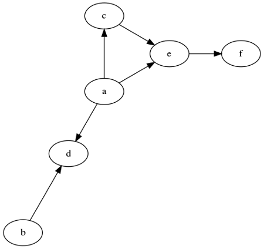
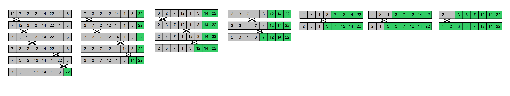

Module 2 - Midterm simulation test¶
This is the second DS MidTerm exam provided in December 2023.
Please, refer to Prof. Alessandro Romanel for any comments on the theoretical part.
Solutions for the practical part will be provided later today (or tomorrow).
Theoretical part¶
Exercise 1¶
Given a list ùêø of ùëõ‚â•3 integer elements, please compute the asymptotic computational complexity of the following function, explaining your reasoning.
[66]:
def my_fun(L):
for i in range(3, len(L)):
k = 0
R = L[i]
tmp = []
while k < 3:
if k % 2 == 1:
R = R - L[k]
else:
R = R + L[k]
k += 1
tmp.append(R)
return sum(tmp)
Exercise 2¶
What is the topological sorting of a directed acyclic graph (DAG)? Briefly describe an algorithm to compute it and provide a possible topological view of the following DAG.
Practical part¶
Exercise 3¶
Bubble sort is a sorting algorithm that compares two adjacent elements and swaps them until they are in the intended order. Just like the movement of air bubbles in the water that rise up to the surface, the maximum element of the array moves to the end in each iteration. Therefore, it is called a bubble sort.
The idea is to scan multiple times the list and when you find two elements in the wrong order you swap them.
If at the end of a scan you did not swap any elements then your list is sorted
After the first scan the max is at the last position, at the second scan the “second max” is at the second-last position and so on.
Below you can see and example of the bubble sort execution
Implement the bubble sort algorithm by filling the sort method below
Then, test it on a random array of 500 elements and check its correctness. Finally, analyze the time complexity of this algorithm.
[4]:
import random
class SortingAlgorithm:
def __init__(self, data, verbose = True):
self.data = data
self.comparisons = 0
self.operations = 0
self.verbose = verbose
def getData(self):
return self.data
def getOperations(self):
return self.operations
def getComparisons(self):
return self.comparisons
def sort(self):
raise NotImplementedError
class BubbleSort(SortingAlgorithm):
def sort(self):
self.comparisons = 0
self.operations = 0
"""
to implement
"""
if __name__ == "__main__":
d = [7, 5, 10, -11 ,3, -4, 99, 1]
print("Before sorting:\n")
print(d)
bubSorter = BubbleSort(d, verbose = True)
bubSorter.sort()
print("After sorting:\n")
print(d)
Before sorting:
[7, 5, 10, -11, 3, -4, 99, 1]
After sorting:
[7, 5, 10, -11, 3, -4, 99, 1]
Exercise 4¶
Given a binary search tree as the one provided in the code chunck below, implement the missing function search_interval(a, b) that given two values a and b, finds all values between a and b in the tree, returning them in an ordered data structure. For instance, calling search_interval(24, 33) on the following tree should return: [24, 26, 31, 32].
[ ]:
class BinaryTree:
def __init__(self, value):
self.__data = value
self.__right = None
self.__left = None
self.__parent = None
self.__depth = 0
def getDepth(self):
return self.__depth
def setDepth(self, newdepth):
self.__depth = newdepth
def getValue(self):
return self.__data
def setValue(self, newValue):
self.__data = newValue
def getParent(self):
return self.__parent
def setParent(self, tree):
self.__parent = tree
def getRight(self):
return self.__right
def getLeft(self):
return self.__left
def insertRight(self, tree):
if self.__right == None:
self.__right = tree
tree.setParent(self)
tree.setDepth(self.getDepth() + 1)
def insertLeft(self, tree):
if self.__left == None:
self.__left = tree
tree.setDepth(self.getDepth() + 1)
tree.setParent(self)
def deleteRight(self):
self.__right = None
def deleteLeft(self):
self.__left = None
def inOrderDFS(self):
ret = []
if self != None:
r = self.getRight()
l = self.getLeft()
if l != None:
ret.extend(l.inOrderDFS())
ret.append(self.getValue())
if r != None:
ret.extend(r.inOrderDFS())
return ret
def search_interval(self, a, b):
raise NotImplementedError
def createBST(intList):
BST = None
if len(intList) > 0:
BST = BinaryTree(intList[0])
for el in intList[1:]:
cur_el = BST
alreadyPresent = False
prev_el = None
while cur_el != None:
prev_el = cur_el
cv = cur_el.getValue()
if cv > el:
cur_el = cur_el.getLeft()
elif cv < el:
cur_el = cur_el.getRight()
else:
# cv == el (el is already present)
# not allowed by rule c, so skip it
alreadyPresent = True
#print("El {} already present".format(el))
break
if not alreadyPresent:
node = BinaryTree(el)
node.setParent(prev_el)
if prev_el.getValue() > el:
prev_el.insertLeft(node)
else:
prev_el.insertRight(node)
return BST
def printTree(root):
cur = root
#each element is a node and a depth
#depth is used to format prints (with tabs)
nodes = [(cur,0)]
tabs = ""
lev = 0
while len(nodes) >0:
cur, lev = nodes.pop(-1)
if cur.getRight() != None:
print ("{}{} (r)-> {}".format("\t"*lev,
cur.getValue(),
cur.getRight().getValue()))
nodes.append((cur.getRight(), lev+1))
if cur.getLeft() != None:
print ("{}{} (l)-> {}".format("\t"*lev,
cur.getValue(),
cur.getLeft().getValue()))
nodes.append((cur.getLeft(), lev+1))
if __name__ == "__main__":
import random
inList = []
for i in range(1000):
inList.append(random.randint(0,1000))
#printTree(createBST(inList[:20])) # to test tree creation...
BST = createBST(inList)
sorted = BST.search_interval(24, 33)
print("Elements between 24 and 33 in the BST:")
print(sorted)